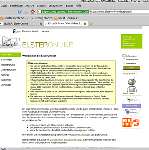
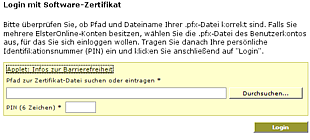
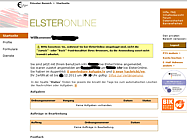

ElsterOnline
Dieser Artikel wurde für die folgenden Ubuntu-Versionen getestet:
Ubuntu 14.04 Trusty Tahr
Zum Verständnis dieses Artikels sind folgende Seiten hilfreich:
Das ElsterOnline-Portal  dient der sicheren Online-Kommunikation mit dem deutschen Finanzamt durch elektronische Unterschrift. Inzwischen stehen mitunter folgende Formulare online zur Verfügung:
dient der sicheren Online-Kommunikation mit dem deutschen Finanzamt durch elektronische Unterschrift. Inzwischen stehen mitunter folgende Formulare online zur Verfügung:
Umsatzsteuervoranmeldung
Dauerfristverlängerung
zusammenfassende Meldung
Lohnsteueranmeldung
Lohnsteuerbescheinigung
Kapitalertragssteueranmeldung
Einkommensteuererklärung
Einnahmenüberschussrechnung
Umsatzsteuererklärung
Gewerbesteuererklärung
Körperschaftsteuererklärung
Als Online-Verfahren wird dazu prinzipiell lediglich ein Browser benötigt, es müssen keine Programme installiert werden. Soweit die Theorie – faktisch werden jedoch nicht jede Ubuntu-Version und jeder Browser unterstützt. Seit Juli 2013 ist das früher vorausgesetzte Java nicht mehr zwingend erforderlich. Allerdings wird ein Internetzugang über DSL benötigt.
Achtung!
Zwingende Voraussetzung ist der Webbrowser Firefox. Bei der Verwendung ohne Java gibt es leichte Einschränkungen (Stand 07/13). Laut eigener Aussage wird Stand 08/17 nur Ubuntu 17.04 von ElsterOnline unterstützt – Anmeldungen unter älteren Versionen waren früher jedoch ebenfalls erfolgreich und erbrachten Rückmeldungen wie
"Voraussetzungen erfüllt / Die Überprüfung war erfolgreich / Ihr System erfüllt die grundlegenden Voraussetzungen zur Nutzung des ElsterOnline-Portals."
Die Benutzung von älteren Ubuntu-Versionen ist zwar möglich, es kann aber nicht sichergestellt werden, dass alle Funktionen unterstützt werden. Eine Tauglichkeitsprüfung des eigenen Systems wird daher vor einer Nutzung dringend empfohlen.
Für die Authentifizierung mittels "elektronischer Unterschrift" gibt es drei Möglichkeiten:
"Basis" mit Softwarezertifikat
"Spezial" mit Sicherheitsstick (benötigt ein 32-bit-System und Oracle Java)
mit Signaturkarte (nicht für Linux verfügbar)
Eine Steuerkontoabfrage ist nur mit der Signaturkarte möglich.

Voraussetzungen¶
ElsterOnline läuft seit 2010 für das Steuerjahr 2009 (und folgende). Benötigt werden der Webbrowser Firefox und u.U. eine Java-Laufzeitumgebung (JRE) von Oracle Java (siehe oben). Die Laufzeitumgebung OpenJDK reicht – trotz positiver Tauglichkeitsprüfung – nicht aus.
 (PDF-Format).
(PDF-Format).Sicherheitsstick¶
Der Sicherheitsstick bietet gegenüber dem Softwarezertifikat eine höhere Sicherheitsstufe. Dieser lässt sich auch in Verbindung mit einem persistent auf USB installierten Live-System, auf welchem auch alle Steuerdaten liegen, betreiben.
Früher hat es den alten "Elsterstick" gegeben, für den unter Elster-Stick nur ein Treiber für SuSE Linux 9.3 verfügbar ist. Aktuell wird der G&D StarSign USB Token für Elster angeboten. Einen Treiber für Ubuntu 10.04, 10.10 und 11.10 (nur 32-Bit) gibt es unter Treiberinstallation .
Installation¶
Es muss das Paket
pcscd
 mit apturl
mit apturl
Paketliste zum Kopieren:
sudo apt-get install pcscd
sudo aptitude install pcscd
installiert[1] werden (libccid wird als Abhängigkeit automatisch mitinstalliert). Der heruntergeladene Treiber GuDStarSignUSBTokenFuerELSTER_Linux_Ubuntu.tar.gz wird normal entpackt[4] und installiert. Dabei darf der Sicherheitsstick nicht mit dem Computer verbunden sein. Nach erfolgreicher Installation leuchtet die Diode im jetzt angesteckten Stick gleichmäßig.
Nutzung¶
Verspürt man Kommunikationsbedarf mit dem Finanzamt, geht man auf Elsteronline , wählt das gewünschte Authentifizierungsverfahren und klickt auf "Login". Je nach gewählter Authentifizierung kommt die Aufforderung, den Pfad zum Softwarezertifikat einzugeben oder den Sicherheitsstick anzustecken.
Im Anschluss kann man im Benutzerkonto eigene Nachrichten einsehen.
|  |
| Login SWZ |
|  |
| Elster Konto |
 Übersichtsartikel
Übersichtsartikel- Erstellt mit Inyoka
-
 2004 – 2017 ubuntuusers.de • Einige Rechte vorbehalten
2004 – 2017 ubuntuusers.de • Einige Rechte vorbehalten
Lizenz • Kontakt • Datenschutz • Impressum • Serverstatus -
Serverhousing gespendet von